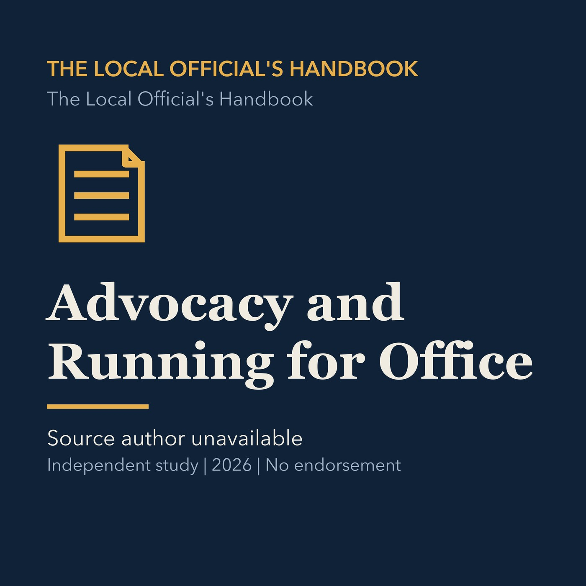

EPISODE 08
Advocacy and Running for Office
Explains how advocacy, campaigns, coalitions, and timing influence local decisions.

- Stable GUID
86003e4a-a445-554c-a82b-94a46bfe1884- Release
- local-officials-handbook-v2026.4
- SHA-256
50dfc00fa043e924a9e9d67884906ca524a8c376bc6662333acd08657ff0c87b